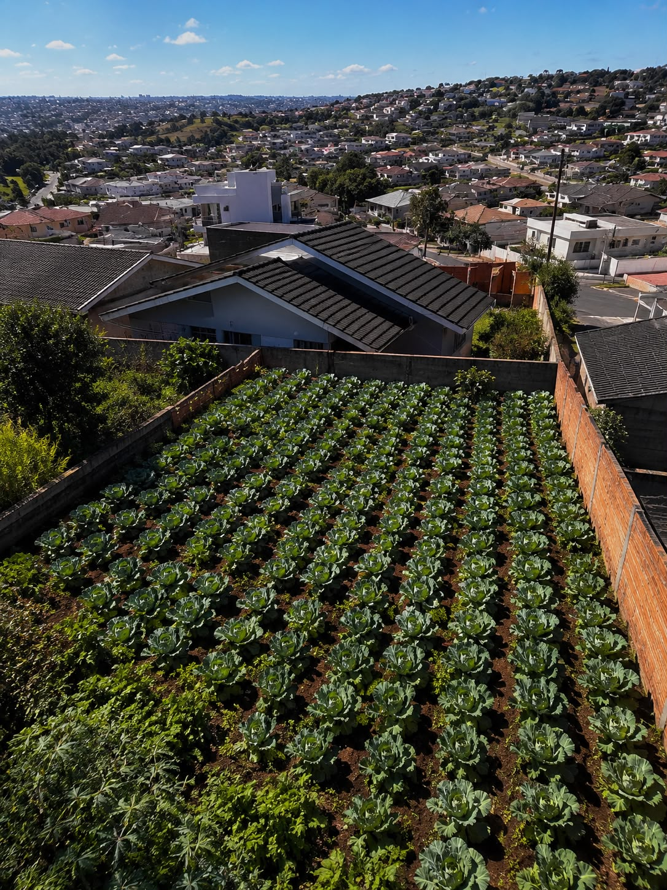
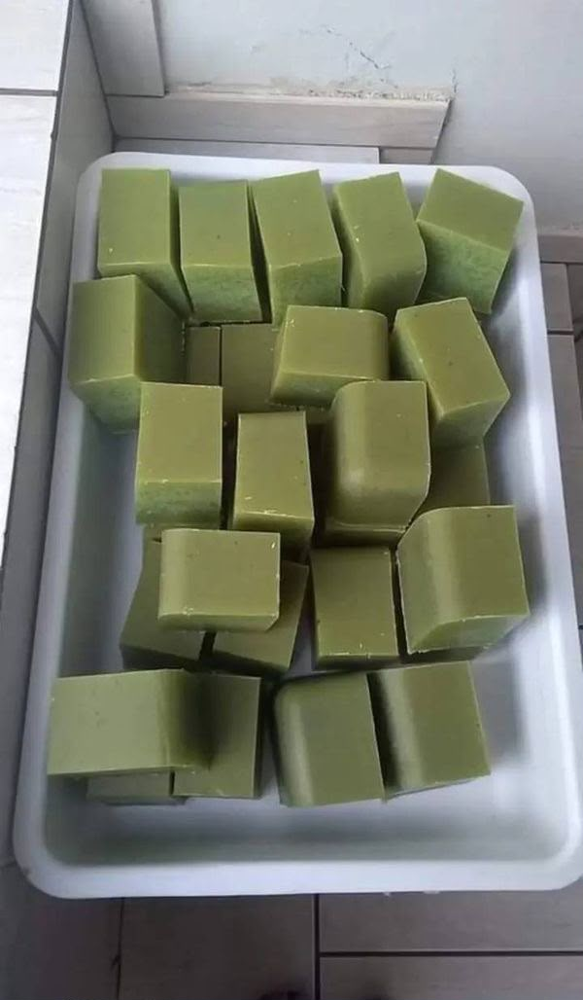
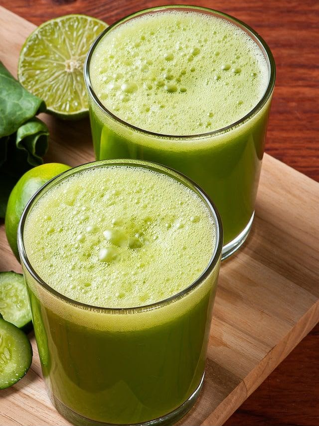

AgroFuturo 2026 Projeto Destaque Escolar: Couve Urbana Inteligente
🥬 Plantação Urbana
A couve é cultivada em ambiente urbano sustentável, promovendo alimentação saudável, educação ambiental e conscientização sobre produção local.
🧼 Sabonete de Couve
Produção de sabonetes naturais elaborados a partir da couve, auxiliando nos cuidados com a pele e incentivando o reaproveitamento sustentável.
🥤 Sucos e Polpas
Transformação da couve em sucos nutritivos e polpas congeladas, favorecendo uma alimentação funcional e saudável.
🍽 Consumo Alimentar
Utilização da couve picada para refeições saudáveis, fortalecendo hábitos alimentares conscientes.
📸 Galeria do Projeto



🚜 Agricultura, Tecnologia e Sustentabilidade
A agricultura sustentável ganha espaço globalmente ao unir produtividade, inovação e adaptação climática. O Brasil se destaca pela aplicação de tecnologias que reduzem custos, aumentam a eficiência e fortalecem a segurança alimentar.
Pesquisas brasileiras desenvolveram microrganismos capazes de auxiliar as plantas na obtenção de nutrientes, reduzindo a dependência de fertilizantes químicos e contribuindo para uma produção mais sustentável.
A Inteligência Artificial permite monitoramento das lavouras, análise de solo, previsão climática, irrigação inteligente, automação agrícola e aumento da produtividade.
Benefícios da Inteligência Artificial no Campo
💧 Otimização de Recursos
Uso inteligente da água, fertilizantes e insumos.
🚁 Monitoramento por Drones
Identificação rápida de doenças e falhas nas culturas.
📈 Gestão de Riscos
Previsão climática e planejamento da produção.
🚜 Automação
Máquinas autônomas e agricultura de precisão.
🏆 Qualidade dos Produtos
Maior controle da produção até o consumidor final.
♻ Sustentabilidade
Redução de desperdícios e menor impacto ambiental.
Quer aprender a transformar a Couve?
Preencha os dados abaixo para receber gratuitamente nossas receitas, dicas de consumo e o passo a passo para produzir produtos incríveis com a couve!